Introduction to Program Synthesis¶
Lecture 1¶
-
程序合成与编译，机器学习都具有生成新程序的功能与目标。
-
程序合成与编译的区别在于后者更强调直接将语言进行翻译，而前者更类似于“声明式编程”或者说“逻辑式编程”，即提供一些high level 的抽象，然后让synthesizer自己去寻找如何进行实现，当然现在编译优化等工作也致力于此目标。
当然程序合成与“声明式编程”或者说“逻辑式编程”也有区别，后者更加强调与实现更通用的求解算法，而程序合成通常只需要关注与domain specific的算法即可。
最后是程序合成与机器学习：机器学习可以看做是spec的形式以input与output呈现出的一种程序合成，但是机器学习的程序形式通常已经被充分的预定义好了——我们只需要找到合适的参数填入程序中，在这个程度上，它的变化没有那么丰富。程序合成领域向机器学习逐渐靠拢的一个趋势是开始注重对于有污点的数据(错误的spec)也要有正确的输出。
- 程序合成的定义
Program Synthesis correspond to a class of techniques that are able to generate a program from a collection of artifacts that establish semantic and syntactic requirements for the generated code.
这里面着重强调：generation，即让程序合成走向更通用的应用，向"logic programming"靠拢；以及semantic and syntactic requirements，即为程序合成提供语义和语法上面的约束，也就是说灵活性也不能太高，这就要求synthesis system需要建立合适的类型系统以及规定合理的program space等。
- 程序合成的发展现状
程序合成可以着眼于算法的合成，或者应用级的开发，例如excel的Flashfill。除此之外程序合成还可以用于逆向工程，即从一个implementation求出其high level的spec。然后以此为基础来进行程序分析或者合成更有效的程序。
程序合成与AI领域也有深度的结合，例如可以用AI的学习来辅助合成一个程序，或者应用程序合成方法来帮助AI在可用数据较少的情况下完成目标或者生成可解释性更强的模型。
-
程序合成的挑战
-
intention：如何明白用户想要生成什么程序，是通过input-output来推断还是建立合适的synthesis system以及spec语言使得用户能够给出问题的描述。并且在用户的描述是under-specification的时候也要尽力生成正确的程序。
- invention：如何从用户给出的spec来找到合适的implementation
- adaptation：需要将合成的程序与现实的软件开发相结合，最终的implementation要以某种现实中的编程语言来呈现，而非停留在伪代码或者IR的阶段。
Lecture 2: Introduction to Inductive Synthesis¶
- inductive synthesis，即归纳式的程序合成，就是通过给定input-output来合成对应的程序，通常可以分为PBE（programming by example）与PBD（~ demonstration）前者只需要给定input-output，而后者还需要给定简单的演示。一个简单的PBD的例子就是"Pygmalion"，可以记住人们在编辑器之中的操作，并自动提示类似的操作。
但是发展到现在，很多PBD与PBE的工作都已经被机器学习所取代，不过FlashFill等系统仍然是PBE的成功应用。
- PBD,PBE通常面临着两大问题：如何找到符合要求的程序，以及如何确定找到的程序就是用户想要的（毕竟现实情况几乎总是under-specification）。机器学习通常着眼于后者：neural network因为其自身极具表达能力，可以尽力符合所有的input-output，而SVM则对空间进行了限制，以此排除那些不需要的解。
PBE同样需要对于程序的空间进行限制，早期的PBE甚至只提供仅仅一列程序来供选择，当然现在随着搜索技术的逐渐完善，人们可以更高效的搜索更大的空间，以此来确保正确性。
- 描述一个问题就需要一种适当的语言
In general, describing a program requires a notation, a programming language that allows you to describe many different computations by composing individual syntactic elements each with well defined meaning.
通常我们需要预定义一种更加narrow的DSL来限制程序的语法或语义，以及我们的搜索空间。同时我们也会希望这个DSL有着其他一些特性以便于我们分析，例如无副作用性，以及简洁（表达性强）
-
我们可以通过建立抽象语法树(Abstract syntax tree,AST)来表示一个程序，而AST又通常可以基于上下文无关文法来表示。
-
对于inductive synthesis,可以采用以下几种搜索策略：
-
explicit enumeration：采用top-down或者bottom-up的形式枚举并建立AST,并检查其是否满足observation。这里的关键在于如何剪枝来避免枚举出一些根本不可能的程序或者相同的程序。
-
symbolic search：相较于前者希望自己找出符合要求的程序，这个更倾向于通过某种符号变换来得到程序，这里又分为Version Space Algebras以及Constraint Systems两大分支。
-
explicit enumeration期望将程序用AST表示，并且这个AST是基于一种简单的DSL来实现，这样既方便与我们的枚举过程，又便于对于程序空间进行限制，以此找出更加简洁并符合要求的程序。
而symbolic search则希望将程序的空间通过参量化的方式来表达，不同的编码与表达方式可以轻易的对于程序的形式或长度等进行限制。
- 另外定义程序空间时需要注意减少对称性，因为对称性会带来更多重复的程序。部分基于constraint或enumeration的合成方式会对此非常敏感。
Lecture 3: Bottom Up Explicit Search¶
- 简易的bottom-up search
我们可以轻易得到一个非常简单的bottom-up search算法，即从terminal(终止节点)出发，不断通过AST所规定的语法扩充程序，并消除重复程序（这里特指*observationally equivalent*，即只在给定输入上有相同输出）。知道找出第一个符合output的程序。
Synthesize(inputs, outputs):
plist := set of all terminals
while(true):
plist := grow(plist);
plist := elimEquvalents(plist, inputs);
forall( p in plist)
if(isCorrect(p, inputs, outputs)): return p;
这里优点有：
- 优先找出更短的程序，还可以通过为grow以及elimEquvalents函数添加启发式的方法来指导找出更符合我们需求的函数。
- 对于程序的building block只有黑盒的要求，不用知道组成细节，只需要知道给定输入，程序的输出结果
- 自动解决symmetry的问题（消除了observationally equivalent）
但是也有缺点：
- 难以估计运行效率
- 试图合适的常数的枚举过程很困难
-
当目标语言是上下文相关的时候不适用
-
Synthesis through Unification (STUN)
我们可以通过将两种次优的程序结合起来组成一个更好的程序。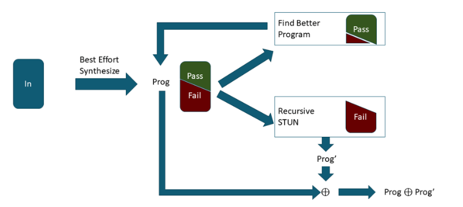 例如这个算法，如果现有的算法无法满足所有的input-output,那么可以选择（1)挑选一个failed case,然后对于现有程序改进，让它满足这个case。（2)或者对于错误的case递归调用原算法，找出一个符合这些case的程序，随后通过分支等方式将这二者结合起来。
这二者的选择可以基于启发式的方式，比如随机挑选一个case如果这个通过就执行(2),因为此时可能大部分case都已经通过了，原程序已经没有什么优化的空间了，反之则执行（1）。
-
top-level-branch：dsl语言先天提供了分支功能，可以在表达式之间进行选择。但是有时DSL语言本身不提供这一选项，所以只能用antiunify技术来实现，即在两个表达式之间尽量抽取出一样的部分（通过搜索的限制来实现），使得只有某个变量不一样，然后只需要对于这个变量进行选择就可以了。
-
STUN可以看做将搜索过程拆分成了几个小部分，而这种拆分也可以作用于搜索的结构之上。比如一个搜索有目标A,B，我们可以先找出尽量符合目标A的所有程序，并要求这些程序至少包含目标B的超集。这样下一步就是从这些程序之中在搜索选出尽量符合B的程序。这样分层次的搜索即**Hierarchical Search**
Lecture 4: Top Down and Type directed Explicit Search¶
- 除了自底向上，我们还可以通过自顶向下的方式来实现搜索，这通常是从一个简单函数开始，其中有很多暂时未知的"洞"，我们需要不断填充这些洞并使得程序逐渐符合要求。这种合成方法对于函数式的编程常常有奇效。
除此之外，还可以在搜索的过程之中引入类型系统来进一步排除不符合要求的程序。
- 下面是一个简单的语言
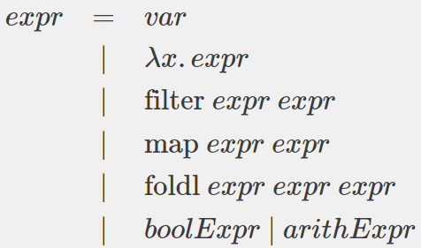
我们希望在其上合成出一个程序，其读入一个列表的列表，并对于其中的每一个列表，消除掉其中的最小元素，这可以形式化的被表示为
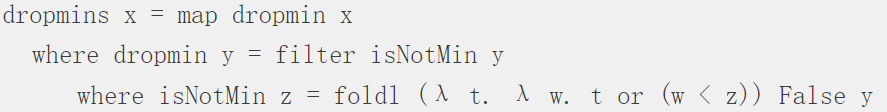
- 我们可以应用类型系统来对于搜索分支进行检查，例如
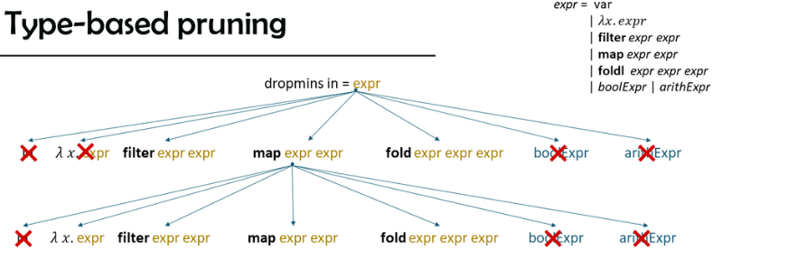
当我们发现某种程序的输出一定不可能为[[Int]]类型的话，就可以将这个分支给剪掉，否则就继续展开subexpression直到找到合适的程序。
- 除了应用类型系统之外，还可以添加各种先验知识来辅助剪枝或者推断，比如map要求input和output具有相同的长度。
类型系统还可以为我们进一步提供信息，例如我们在第一步选择了filter,那么可以进一步知道其input和output的元素都是[Int]类型的这就可以知道我们进一步利用类型系统剪枝。
Lecture 5: Inductive Synthesis with Stochastic Search¶
-
这一节的主题是通过著名的Markov Chain Monte Carlo (MCMC)方法来指导搜索的过程
-
首先假设马尔科夫状态转移只依赖于上一步的结果，那么我们就可以写出一个状态转移矩阵K，同时假设这个矩阵K满足一些"technical requirments"（例如要求可以在任意两个状态之间转移）,就可以求出一个stationary distribution \(\pi\), 使得从任意初始状态出发，经过足够长的时间之后，到达状态x的概率都是\(\pi(x)\)。
-
应用上述原理，我们尝试找出一个状态转移矩阵K，使得其stationary distribution \(\pi\)满足更优的程序权重更高。而找出这样的矩阵K通常可以采用Metropolis-Hastings（HM）算法。
-
其思路为首先从一个初始矩阵J出发，（J是一个状态转移矩阵并且\(J(x,y),J(y,x)\)要么同时为零，要么同时为正）。 然后可以定义\(A(x, y)=\frac{\pi(y) * J(y, x)}{\pi(x) * J(x, y)}\)，由此定义状态转移矩阵为： $$ K(x, y)=\begin{cases} J(x, y) & \text { if } x \neq y \text { and } A(x, y) \geq 1 \\ J(x, y) * A(x, y) & \text { if } x \neq y \text { and } A(x, y)<1 \\ J(x, y)+\sum_{z: A(x, z)<1} J(x, z)(1-A(x, z)) & \text { if } x=y \end{cases} $$
显然K也是一个状态转移矩阵，并且我们可以对\(A(x,y)\)分类讨论得出重要性质：\(\pi(x,y)\cdot K(x,y)=\pi(y)\cdot K(y,x)\)，由此可以算出\(\pi\cdot K=\pi\),即我们得到了desired stationary distribution。
-
在实际之中，可以取J为uniform distribution，即在任意两个状态之间的转换都有着相同的概率。但是选择合适的J对于算法的速度有着很大的影响。而实际上困难之处在于如何为程序找到合理的\(\pi\), 我们希望首先不能出现0，以免出现除0的问题，其次这个\(\pi\)能够使得输出越靠近标准输出的程序，则其概率就越大。
-
下面通过一个Schkufza, Sharma and Aiken系统来举例。这是一个系统，目的是给定一个candidate program,合成总长度有限制的汇编代码使得其输出一致并且效率更高。
-
proposal distribution J:
引入五个参数，分别表示对于一个程序进行各种操作的概率
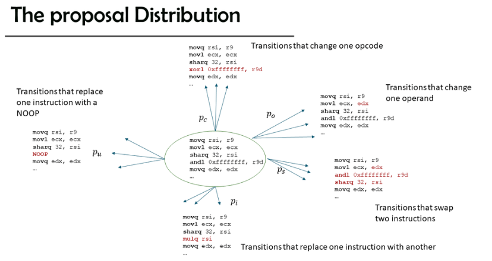
依次为基础，给定某个程序，就可以根据以上概率随机选择一种变换，并随机生成一个合法的程序，因此就得到了任意两个程序之间转换的概率。
-
stationary distribution:
R是candidate program，令eq, perf为当前程序T与R相比而计算出的正确性函数与效率函数, 并引入权重参数\(\beta\)以及归一化因子Z，可以定义以下权重公式：
\(\pi(\mathcal{T})=\frac{1}{Z}(\exp (-\beta(e q(\mathcal{R}, \mathcal{T})+\operatorname{perf}(\mathcal{R}, \mathcal{T}))))\)
-
Additional embellishments：
可以将整个搜索分为两个phase来辅助搜索，我们希望搜索进行在一个cluster上，其中的程序输出正确但是与原程序非常不同。但是转移到这个cluster的path较少，因此我们首先忽视perf权重，使得更加容易地转移到一些性能大相径庭的程序上。然后再引入这个参数，在我们的理想cluster上搜索高性能程序。
-
我们还可以举另外一个例子来说明MH方法对于大搜索空间问题的应用，例如直接进行在AST树上应用MH方法。
-
定义proposal distribution如下：对于程序e，在它的AST树上随机找到一个节点v，然后记\(e_v\)为这颗AST树从v处截断，以v为根的子树。然后将\(e_v\)随机更换为一个相同大小的树，生成另外一个程序\(e'\)对应的AST树，这个随机选取过程的概率就是e转移到\(e'\)的概率。
-
然后定义stationary distribution为\(\pi(e)=\frac{1}{Z} \exp (-\beta C(e))\),其中函数C表述当前程序与所要求的input-output有多少个是不一样的。这样就可以应用MH方法进行MCMC搜索了。
-
但是注意到这个方法实际上效果不尽如人意，原因可能有：
- 函数C对于程序正确性的估计比较粗糙，可能有个程序在所有input之上都只差一点，但优先度仍然很低。
- proposal distribution的程序转化，一次就替换一整棵子树，跨度过大了，会导致搜索的精度不够，容易跨过最优解。
Lecture 6: Version Space Algebras from SMARTedit to FlashFill¶
-
从这里开始，就要尝试着接触基于***symbolic* representations**来进行的搜索了。这种方法希望通过符号表示来对于搜索空间进行高效的限制与表达，并且可以一次排除掉一大堆不可能的程序。之前提到过的top-down方法之中我们首先对于谓词用hole来替代，这实际上就是一种symbolic representation的思想。
-
Version Space: 给定input与output,所有从定义域映射到值域的函数就是hypothesis space,而其中符合特定input-output对的要求的就是version space
-
我们可以通过格来表示version space,例如定义\(lub:=\vee,glb:=\wedge\)为格上的基本运算，\([p,q]:=\{x|p\leq x\leq q\}\)为由p,q之间的一段空间。如果hypothesis space 是一个格并且version space 可以被表示为\([S,G]\),我们就可以说这个version space是*Boundary Set Representable*的，其中S通常代表最 secific的函数而G则是最general的。 同时可以定义\([al,ah]∩[bl,bh]=[lub(al,bl),glb(ah,bh)]\)
-
version space algrbra 我们可以在version space的基础之上进行一系列的操作与变换，例如union操作可以将两个vesion space并到一起，而join操作则定义为 $$ VS_{H1,D1}⋈VS_{H2,D2}={(h1,h2)|h1∈VS_{H1,D1},h2∈VS_{H2,D2},C((h1,h2),D)}\\ where\;D={(di_1,di_2)}\; given D1={di_1} and D2={di_2}. $$
其中C通常用于一致性检测，选择哪一些product是需要的。 这个操作通常可以表示将一系列操作序列聚合在一起。 在version space algrbra这里面，我们可以也定义一些AST树，但是这些并不再表示我们需要搜索的函数，而是各种representation的变换。
-
FlashFill原理
-
text manipulation语言，flashfill定义了自己的语言： 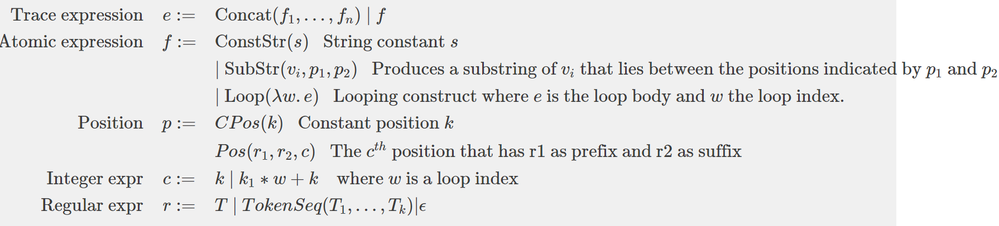 同时还引入了STUN的思想，提供了表达控制的语句 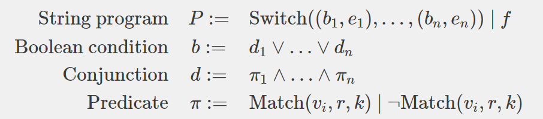 此处switch表示找到第一个值为真的\(b_i\)，并输出对应的\(e_i\)，而match 则表示\(v_i\)之中是否有至少k个符合模式r的子串。通过这些信息我们就可以提供top-level-branch。
-
e-graph: e-garph试图将指数级的程序空间用一个压缩图来表示，使得有着相同效果的表达式被压缩在一起，并且从图的起点走到终点就可以对应着一个完整的程序。 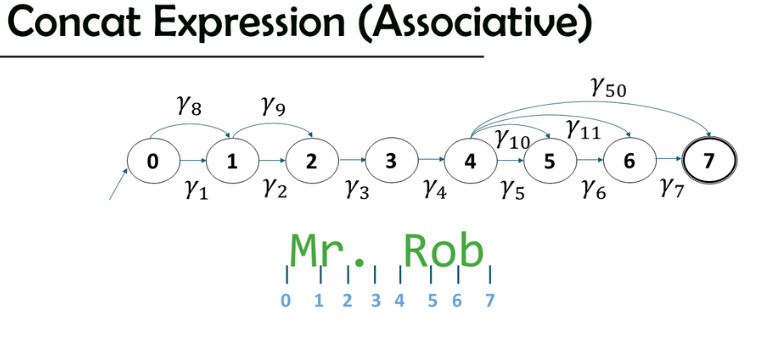 例如在上图之中，我们想要学习到如何从Rob Miller(图中未显示)这个字符串转移到Mr. Rob这个串，然后我们可以首先学习到一些简单的atomic expression,例如\(\gamma_1='M',\gamma_{50}=SubStr(Pos('',Word,1),Pos(Word,'',1))\)表示找到第1个单词Rob，它们分别能够成功生成目标串的一部分，我们只需要找到一条从0-7的path，就可以将不同的表达式concatenate起来，生成一个符合要求的函数（不一定是最终要的，但是符合这一个例子的要求）。进一步的我们可以用union操作将相同效果的操作\(\gamma_1,\gamma_8\)给压缩在一起。 值得一提的是atomic expression也可以由loop（见语言的定义），这时我们一般通过尽力寻找loop之中各个表达式的共同之处，然后使用antiunification来将其合并成一个更加通用的表达式。
-
为何从符合单个样例的程序合成一个普适性的程序，我们最重要的就是如何将两个这样的程序合并起来， 在这里可以采取之前提到的join方法，即对两个e-graph做一个积图
\(\(G_1=\{N_1,E_1\},G_2=\{N_2,E_2\},E_i=\{(s_i,d_i,\gamma_i)\},\\\\ \text{E是边的集合，表示图中两个点s,d之间对应的表达式}\\\\ \begin{aligned} G_1 \cap G_2 &=(N, G) \text { where } \\ N &=N_1 \times N_2 \\ G &=\left\{\left(\left(s_1^t, s_2^v\right),\left(d_1^t, d_2^v\right), \gamma_1^t \cup \gamma_2^v\right) \mid\left(s_1^t, d_1^t, \gamma_1^t\right) \in E_1 \wedge\left(s_2^v, d_2^v, \gamma_2^v\right) \in E_2\right\} \end{aligned}\)\)
例如下图成功由两个图之中提取出了一个更加通用的表达式
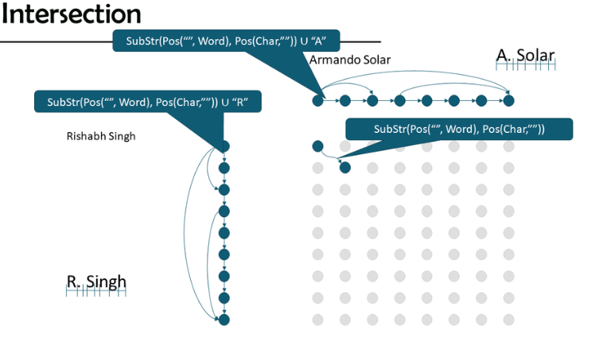
给定足够多的样例，就可以学习到目标函数。
Lecture 7: Constraint-based Synthesis with Sketch.¶
在这一节之中，通过sketch为例子，说明了利用参数化的程序来让整个程序合成过程变得更加"symbolic"。
-
为了达到这一目标，我们由三个需要解决的问题，即如何定义参数化的程序用以表示整个空间，如何表示对于参数化程序的限制关系，以及如何高效的求解这样的限制关系。
-
目前有两种较为出名的方法来定义参数化程序，一是syGus solver，在这里由用户来提供一系列的程序组件，他们通常是以上下文无关文法来编写，由solver来找到如何构建出想要的程序。
-
另外一种方法是Sketch,这是一门涉及完备的编程语言， Sketch Manual ,其和其他编程语言最主要不同是可以用？？表示未知，让程序自行推断。我们可以将??嵌入到某一段程序之中，作为generator function
然后通过harness测试来对于函数进行限制
这样solver便会对应的生成出相应的常数填入？?之中
void _main (int x, int y){
assert ((((2 * x) + (0 * y)) + 3) == ((2 * x) + 3));
assert (((3 * x) + (2 * y)) == ((3 * x) + (2 * y)));
}
除了这个简单的例子之外，generator function也可以被用于更多高级的程序操作之中，例如递归调用，或者作为参数传递给另外的程序使用。
- 由此，当用户利用sketch编写完成了一段程序之后，我们就可以利用所有的??作为参数来对于程序空间进行定义，即所有的??取定之后，自然也就生成了一段对应的满足harness 的目标程序。
通常可以用\(\phi\)来表示所有参数的取值，理想情况下\(\phi\)可以看做一张表格，每个??对应着一个常数，但是由于generator可以被反复递归调用，并且sketch支持不同的上下文对应生成不同的??值，因此\(\phi\)还必须要考虑到上下文的影响，因此记上下文为g,\(\phi\)可以定义为\(\phi(g_i,??_j)\)表示在某个上下文之下某个??的取值。
由于可能有一个generator调用另外一个generator,因此上下文可能出现嵌套，例如\(\phi(g_ig_j,??_k)\)。但这样下去有可能出现无限嵌套的情况，因此sketch对于嵌套调用的深度作出了限制，使得\(\phi\)的定义域再次回归到有限的状态之中。
Lecture 8: Constraint based inductive synthesis and SAT¶
-
为了解决从一段用户输入程序到最终输出的问题,sketch大致采取如下的策略来生成限制并且求解: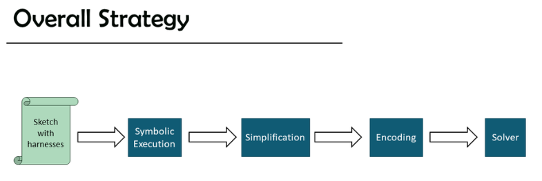
-
首先我们需要定义一段程序的语义，可以定义\(A[expr]:\Sigma\rightarrow value\)表示给定一个状态，可以将其映射到某个value，类似的\(C[cmd]:\Sigma\rightarrow\Sigma\)表示给定一个状态，这回将其映射到另外一个状态之中。每个状态就是当前时刻程序之中所有变量名到其对应的值的映射关系。
-
sketch的符号执行与之稍有不同，因为hole的存在，我们只能得到??参数的限制而非真实值。此时上式之中的value应该被替换为从参数取值\(\phi\)到整数的映射。例如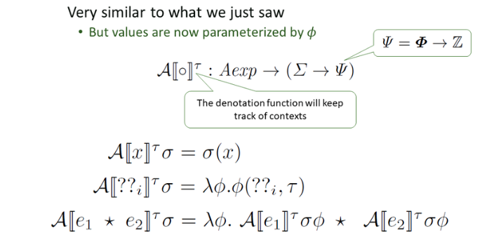
类似的，对于cmd的映射也需要维护所有可行的\(\phi\)函数
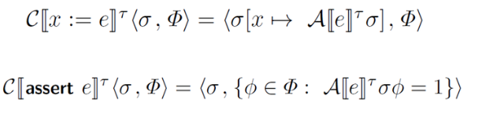
- 我们可以把一个集合表示为一个谓词，例如\(\Phi:=P_\Phi(\phi)\)表示某个\(\phi\)是否在这个集合之中，由此可以通过谓词来表示程序之中各个节点之中所有可能的参数取值，并且利用\(P_\Phi(\phi)\wedge f(\phi)\)就可以引入新的限制关系，\(P_{\Phi_1}(\phi)\vee P_{\Phi_2}(\phi)\)就可以表达or这样的逻辑关系。
- 我们可以将一个sketch程序的限制关系如下来表示
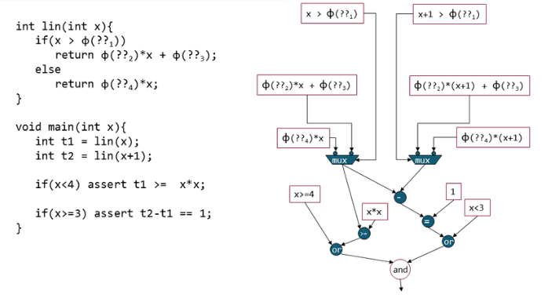
通过之前所述的谓词运算，就可以得到一个完整的限制关系以供约束求解。同时，我们可以将这个结构进行简化，例如结构哈希（将一个限制关系树之中结构完全相同的子树合并为一个节点，以供后续使用）以及代数简化（在之前的基础之上识别出代数等价的表达式也合并为一个节点)。这样可以将树重新组织为DAG，提高了中间变量的可复用性，使得运算与求解更加简洁。
Lecture 9: Solving Constraints.¶
- sketch主要利用将限制转化为conjunction normal form(CNF,合取范式)，并利用SAT来求解。一个布尔表达式可以很轻松的转换为CNF，因为我们可以首先将这个布尔表达式拆分为若干个\(x_1\wedge x_2\cdots x_i\Rightarrow x_j\)，其中\(x_k\)是字面量，表示某个变量或者其反。然后利用\(a\Rightarrow b\)等价于\(\neg a\vee b\)将其转化为若干析取范式的和取式。
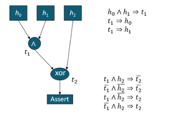
- sketch将所有变量的可能取值通过one-hot来编码，即用一个list来表示某个变量的是所有可能取值以及其indicator，可以定义基本运算的编码转换规则，例如下图所示
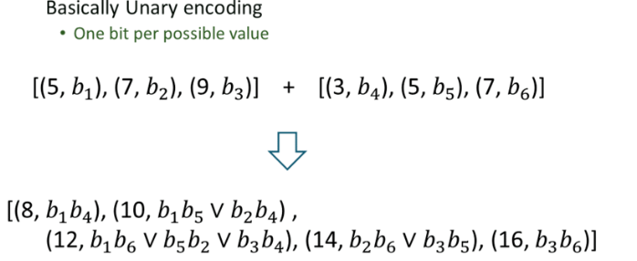
这样做之后，就可以用之前所述的布尔运算转为CNF来将整个程序转化为一个SAT求解问题。求解完毕之后逐层利用indicator就可以倒推哪些变量的取值是可行的。
- 现代的SAT求解器大多数都是基于DPLL算法来实现的，这个算法的核心是当我们为某个变量赋值之后，需要检查所有和这个变量相关的析取表达式，如果某个表达式已经只剩最后一个变量没有赋值，并且前面的所有字面量都已经为否，那么就可以推出最后一个变量的值。
但是其他更多更高效的求解器还引入了其他的优化方法，例如（1）当发现冲突之后，寻找到某个导致冲突的从句，并且将其加入到所有要求满足的析取范式之中，eg:CDCL；（2）two literal watching：为每个析取表达式维护两个观察字面量，如果这两个字面量都还没修改，那么我们就不必检查这个析取表达式，反之判断是否还有其他字面量没被赋值（并更换观察字面量）或者推导出最后一个变量的赋值；（3）为每个变量维护一个value，表达其在冲突之中的出现次数（这个value也会随着时间衰减），并据此选择接下来将要赋值的变量。